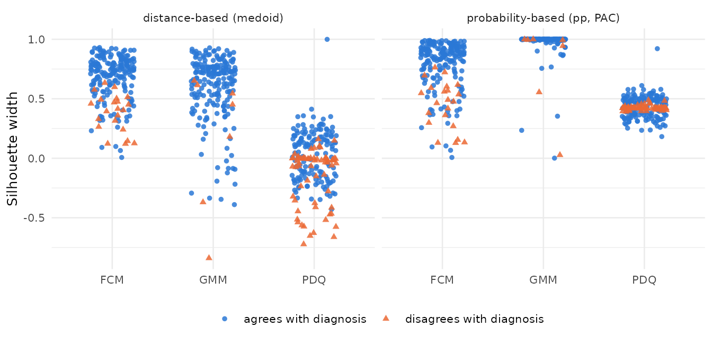

Case study: soft clusterings of thyroid patients
Source:vignettes/articles/case-study-thyroid.Rmd
case-study-thyroid.RmdThis article compares three soft clusterings of the same patients with the widths of Silhouette, and then uses the known diagnoses to check what the widths reveal. It follows the thyroid example of the package paper and shows the full code.
The UCI thyroid data, distributed with mclust (Scrucca et al. 2016), record five laboratory measurements on 215 patients whose thyroid function was diagnosed from their full medical record as normal, hypothyroid or hyperthyroid.
library(Silhouette)
suppressPackageStartupMessages(library(mclust))
data(thyroid, package = "mclust")
table(thyroid$Diagnosis)
#>
#> Hypo Normal Hyper
#> 30 150 35
Xt <- scale(thyroid[, -1]) # standardized laboratory measurementsThree soft clusterings
We fit three methods with \(K = 3\): fuzzy c-means (Bezdek 1981) from ppclust, a Gaussian mixture from mclust whose covariance structure is chosen by BIC, and probabilistic distance clustering adjusted for cluster size (PDQ, Iyigun and Ben-Israel 2008) from FPDclustering (Tortora and Palumbo 2025). The diagnoses are not used in fitting.
set.seed(1)
fc <- ppclust::fcm(Xt, centers = 3, nstart = 5)
gm <- Mclust(Xt, G = 3, verbose = FALSE)
pq <- FPDclustering::PDQ(Xt, k = 3)For each fit we need two \(215 \times
3\) matrices: the Euclidean distances from each patient to each
cluster center, and the membership or posterior probabilities.
ppclust::fcm() stores squared distances, so we take square
roots.
fits <- list(
FCM = list(prox = sqrt(fc$d), prob = fc$u),
GMM = list(prox = as.matrix(proxy::dist(Xt, t(gm$parameters$mean))), prob = gm$z),
PDQ = list(prox = as.matrix(proxy::dist(Xt, pq$centers)), prob = pq$probability))
labels <- lapply(fits, function(f) max.col(f$prob)) # the partition each method producedAverage widths
For the distance-based widths we pass the memberships as
prob_matrix, so that every patient keeps the cluster the
method assigned (passing cluster = labels[[...]] would do
the same). For the probability-based widths we pass the memberships
alone. The density-based width warns about zero posteriors, which are
discussed below, so its warnings are suppressed here.
avg <- function(s) summary(s, print.summary = FALSE)$avg.width
tab <- sapply(fits, function(f) c(
medoid = avg(Silhouette(f$prox, prob_matrix = f$prob)),
pac = avg(Silhouette(f$prox, prob_matrix = f$prob, method = "pac")),
PACS = avg(softSilhouette(f$prob)),
NLPPS = avg(softSilhouette(f$prob, prob_type = "nlpp", method = "medoid")),
CeS = avg(cerSilhouette(f$prob)),
DBS = avg(suppressWarnings(dbSilhouette(f$prob, average = "crisp")))))
ari <- sapply(labels, adjustedRandIndex, thyroid$Diagnosis)
knitr::kable(rbind(tab, ARI_with_diagnosis = ari), digits = 3)| FCM | GMM | PDQ | |
|---|---|---|---|
| medoid | 0.659 | 0.588 | -0.026 |
| pac | 0.521 | 0.460 | -0.018 |
| PACS | 0.764 | 0.975 | 0.429 |
| NLPPS | 0.879 | 0.985 | 0.703 |
| CeS | 0.839 | 0.987 | 0.688 |
| DBS | 0.466 | 0.085 | 0.291 |
| ARI_with_diagnosis | 0.659 | 0.892 | 0.015 |
The two families of widths rank the methods differently. The distance-based widths rank them FCM, GMM, PDQ, and the probability-based widths rank them GMM, FCM, PDQ. Agreement with the diagnosis, which would not be available in practice, orders them GMM, FCM, PDQ.
The difference is expected. Distances to cluster means reward the spherical, equal-spread clusters that fuzzy c-means looks for, while the mixture (here with covariance model VVI) allows clusters of different shapes; posterior probabilities reward decisive assignment, which the mixture achieves. In this example the probability-based widths pointed to the partition that matches the diagnosis, but neither family is a substitute for knowing what kind of cluster the analysis is after.
The distance-based and probability-based widths agree on PDQ: every one of them is lowest for it. With the default initialization, PDQ placed 214 of the 215 patients in one cluster; five random initializations gave similar partitions, all with an adjusted Rand index below 0.05.
The density-based width is the exception, and it is lowest for the mixture. Each density-based width is divided by the largest finite log ratio in the sample. For the mixture that log ratio is about 691, against 5.3 for fuzzy c-means, so most of the mixture’s widths are divided by a very large number. The density-based average for the mixture therefore reflects its few most confident patients more than the partition; see the section on zero posteriors below.
The same table, with fuzzy and median averages as well, comes from
calSilhouette(), which scores the partition given by the
memberships in every row:
cs <- suppressWarnings(calSilhouette(prox_matrix = fits$GMM$prox, prob_matrix = fits$GMM$prob))
cs
#> Method Crisp Fuzzy Median
#> 1 medoid 0.58765397 0.60352421 0.67490839
#> 2 pac 0.46029717 0.47335031 0.50932960
#> 3 pp_pac 0.97487592 0.99291881 0.99998172
#> 4 pp_medoid 0.98060299 0.99602933 0.99999086
#> 5 nlpp_pac 0.98147322 0.99713635 0.99999842
#> 6 nlpp_medoid 0.98500675 0.99840423 0.99999921
#> 7 pd_pac 0.97446673 0.98514014 0.99992183
#> 8 pd_medoid 0.98375861 0.99087405 0.99996092
#> 9 cer 0.98743592 0.99645732 0.99999086
#> 10 db 0.08523792 0.08822245 0.01678418
all.equal(cs$Crisp[cs$Method == "medoid"], unname(tab["medoid", "GMM"]))
#> [1] TRUEScoring the distances without the memberships would assign every patient to the nearest center instead, a different partition for these fits:
Which patients are poorly clustered?
The individual widths are more useful than the averages. To check them, we map each cluster to its majority diagnosis and mark the patients whose diagnosis differs.
wrong <- lapply(labels, function(l) {
majority <- apply(table(l, thyroid$Diagnosis), 1, which.max)
levels(thyroid$Diagnosis)[majority[as.character(l)]] != as.character(thyroid$Diagnosis)
})
sapply(wrong, sum)
#> FCM GMM PDQ
#> 22 7 64
w_med <- lapply(fits, function(f) Silhouette(f$prox, prob_matrix = f$prob)$sil_width)
w_pp <- lapply(fits, function(f) softSilhouette(f$prob)$sil_width)
st <- do.call(rbind, lapply(names(fits), function(nm) rbind(
data.frame(method = nm, panel = "distance-based (medoid)", width = w_med[[nm]],
wrong = wrong[[nm]]),
data.frame(method = nm, panel = "probability-based (pp, PAC)", width = w_pp[[nm]],
wrong = wrong[[nm]]))))
st$status <- factor(ifelse(st$wrong, "disagrees with diagnosis", "agrees with diagnosis"),
c("agrees with diagnosis", "disagrees with diagnosis"))
st <- st[order(st$wrong), ] # draw disagreeing patients on top
library(ggplot2)
set.seed(3)
ggplot(st, aes(method, width, colour = status, shape = status)) +
geom_jitter(width = 0.22, height = 0, size = 1.4, alpha = 0.85) +
facet_wrap(~ panel) +
scale_colour_manual(values = c("#2a78d6", "#eb6834"), name = NULL) +
scale_shape_manual(values = c(16, 17), name = NULL) +
labs(x = NULL, y = "Silhouette width") +
theme_minimal(base_size = 10) +
theme(legend.position = "bottom")
Because the labels come from the memberships, a patient whose assigned cluster is not the nearest center has a negative medoid width. To compare the widths with the diagnoses, we take the tenth of patients with the smallest widths and compare the share of misassigned patients among them with the share among the rest:
low_share <- function(w, bad) {
low <- w <= quantile(w, 0.1)
c(lowest_tenth = mean(bad[low]), others = mean(bad[!low]))
}
round(rbind(
medoid_FCM = low_share(w_med$FCM, wrong$FCM),
medoid_GMM = low_share(w_med$GMM, wrong$GMM),
pp_GMM = low_share(w_pp$GMM, wrong$GMM)), 2)
#> lowest_tenth others
#> medoid_FCM 0.36 0.07
#> medoid_GMM 0.14 0.02
#> pp_GMM 0.14 0.02By rank, both families point to the same patients: misassigned patients are concentrated among the smallest widths. In absolute terms they do not. For the mixture, the misassigned patients’ probability-based widths are still high,
c(misassigned = median(w_pp$GMM[wrong$GMM]), others = median(w_pp$GMM[!wrong$GMM]))
#> misassigned others
#> 0.9932631 0.9999855so the mixture is confidently wrong about them, whereas their medoid widths place them among the poorly separated patients:
c(misassigned = median(w_med$GMM[wrong$GMM]), others = median(w_med$GMM[!wrong$GMM]))
#> misassigned others
#> 0.4513205 0.6865956In practice, the patients with the smallest widths are the ones to review first. The object keeps the rows in the order of the data, so they are easy to list:
sil_gmm <- Silhouette(fits$GMM$prox, prob_matrix = fits$GMM$prob)
worst <- order(sil_gmm$sil_width)[1:8]
data.frame(patient = worst, cluster = sil_gmm$cluster[worst],
width = round(sil_gmm$sil_width[worst], 3),
diagnosis = thyroid$Diagnosis[worst])
#> patient cluster width diagnosis
#> 1 14 3 -0.839 Normal
#> 2 211 3 -0.390 Hypo
#> 3 50 3 -0.369 Normal
#> 4 178 1 -0.345 Hyper
#> 5 214 3 -0.335 Hypo
#> 6 185 1 -0.293 Hyper
#> 7 152 1 -0.218 Hyper
#> 8 153 1 -0.192 HyperThe density-based width and zero posteriors
The density-based width of Menardi (2011) scales each log ratio \(\log(\gamma_{ic_i}/\gamma_{i\nu_i})\) by the largest one in the sample. For some patients the mixture’s posterior probability of the neighboring component underflows to exactly zero:
Their log ratios are infinite. dbSilhouette() gives
these patients width 1, scales the other widths by the largest finite
log ratio, and says so in a warning. (Up to version 0.9.6, the infinite
maximum made every other width zero.)
db_gmm <- dbSilhouette(gm$z, average = "crisp")
#> Warning: 7 observation(s) have a zero membership in the neighboring (or
#> assigned) cluster, so their log ratio is infinite; their widths are set to 1
#> (or -1) and the other widths are scaled by the largest finite log ratio.
avg(db_gmm)
#> [1] 0.08523792The average is still small, because the largest finite log ratios of the mixture are huge and set the scale for everyone else. The individual density-based widths still rank the patients by how decisively they are assigned, but the average of a mixture with near-zero posteriors should not be compared with that of a method without them.
Fuzzy averaging
With average = "fuzzy", each width is weighted by \((\gamma_{i(1)} - \gamma_{i(2)})^a\), the
gap between the two largest memberships (Campello
and Hruschka 2006). For the fuzzy c-means memberships the average
depends clearly on the exponent:
sapply(c(a0.5 = 0.5, a1 = 1, a2 = 2, a4 = 4), function(a)
avg(softSilhouette(fc$u, average = "fuzzy", a = a)))
#> a0.5 a1 a2 a4
#> 0.8077759 0.8344067 0.8668654 0.8996649Larger exponents shift weight toward decisively assigned patients, so
fuzzy averages are comparable only at the same a.
Lessons
- Compute each width for every fit and compare fits within a width, never widths with each other.
- Distance-based and probability-based widths answer different questions and can rank methods differently. Report both when the methods assume different cluster shapes.
- A method that fails, like PDQ here, is flagged by the distance-based and the probability-based widths alike.
- Use the individual widths to find the observations to review, and
pass the memberships as
prob_matrix(or the labels ascluster) so that the widths refer to the partition the method produced. - Read the density-based average with care when posteriors are near zero: the most extreme patients set its scale.
Session information
sessionInfo()
#> R version 4.6.2 (2026-10-29)
#> Platform: x86_64-pc-linux-gnu
#> Running under: Ubuntu 26.04.1 LTS
#>
#> Matrix products: default
#> BLAS: /usr/lib/x86_64-linux-gnu/openblas-pthread/libblas.so.3
#> LAPACK: /usr/lib/x86_64-linux-gnu/openblas-pthread/libopenblasp-r0.3.32.so; LAPACK version 3.12.0
#>
#> locale:
#> [1] LC_CTYPE=C.UTF-8 LC_NUMERIC=C LC_TIME=C.UTF-8
#> [4] LC_COLLATE=C.UTF-8 LC_MONETARY=C.UTF-8 LC_MESSAGES=C.UTF-8
#> [7] LC_PAPER=C.UTF-8 LC_NAME=C LC_ADDRESS=C
#> [10] LC_TELEPHONE=C LC_MEASUREMENT=C.UTF-8 LC_IDENTIFICATION=C
#>
#> time zone: UTC
#> tzcode source: system (glibc)
#>
#> attached base packages:
#> [1] stats graphics grDevices utils datasets methods base
#>
#> other attached packages:
#> [1] ggplot2_4.0.4 mclust_6.1.3 Silhouette_0.9.7
#>
#> loaded via a namespace (and not attached):
#> [1] gtable_0.3.6 xfun_0.62 bslib_0.12.0
#> [4] klaR_1.7-4 htmlwidgets_1.6.4 rstatix_1.1.0
#> [7] GGally_2.5.0 vctrs_0.7.3 tools_4.6.2
#> [10] generics_0.1.4 tibble_3.3.1 proxy_0.4-29
#> [13] highr_0.12 cluster_2.1.8.3 pkgconfig_2.0.3
#> [16] prettyGraphs_2.2.0 kpeaks_1.1.0 RColorBrewer_1.1-3
#> [19] S7_0.2.2 desc_1.4.3 lhs_1.3.0
#> [22] lifecycle_1.0.5 rootSolve_1.8.2.4 farver_2.1.2
#> [25] compiler_4.6.2 inaparc_1.2.1 textshaping_1.0.5
#> [28] combinat_0.0-9 ppclust_1.1.0.1 carData_3.0-6
#> [31] httpuv_1.6.17 htmltools_0.5.9 sass_0.4.10
#> [34] yaml_2.3.12 Formula_1.2-6 car_3.1-5
#> [37] ggpubr_1.0.0 tidyr_1.3.2 later_1.4.8
#> [40] pkgdown_2.2.1 pillar_1.11.1 jquerylib_0.1.4
#> [43] MASS_7.3-66 cachem_1.1.0 abind_1.4-8
#> [46] mime_0.13 ggstats_0.14.0 tidyselect_1.2.1
#> [49] digest_0.6.39 mvtnorm_1.4-2 purrr_1.2.2
#> [52] dplyr_1.2.1 labeling_0.4.3 forcats_1.0.1
#> [55] labelled_2.16.1 fastmap_1.2.0 grid_4.6.2
#> [58] cli_3.6.6 magrittr_2.0.5 broom_1.0.13
#> [61] withr_3.0.3 backports_1.5.1 FPDclustering_2.3.6
#> [64] scales_1.4.0 promises_1.5.0 rmarkdown_2.32
#> [67] otel_0.3.0 ggsignif_0.6.4 ragg_1.5.2
#> [70] hms_1.1.4 shiny_1.14.0 evaluate_1.0.5
#> [73] knitr_1.52 haven_2.5.5 ggeasy_0.1.6
#> [76] miniUI_0.1.2 rlang_1.3.0 Rcpp_1.1.2
#> [79] xtable_1.8-8 glue_1.8.1 ExPosition_2.11.0
#> [82] ThreeWay_1.1.4 rstudioapi_0.19.0 jsonlite_2.0.0
#> [85] questionr_0.8.2 R6_2.6.1 systemfonts_1.3.2
#> [88] fs_2.1.0